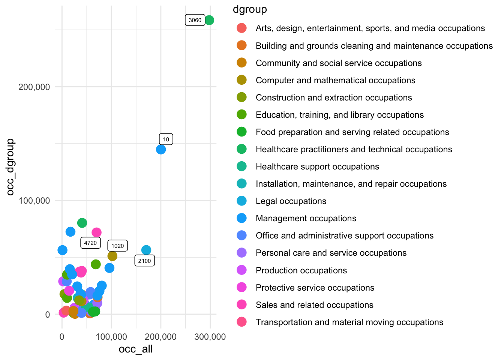

knitr::opts_chunk$set(echo = FALSE)
library(tidyverse)
library(broom)
library(readr)
library(ggrepel)
library(regclass)
library(caret)
library(reticulate)
library(xml2)
library(car)
library(lmtest)
library(sandwich)
library(spatstat)
library(logistf)COVID-19 and Migration
Abstract
These findings indicate individuals with greater remote work flexibility are more likely to relocate from a high-cost area to a low-cost area, which could have broader implications for housing supply and demand as well as local labor markets.
Introduction
The COVID-19 pandemic completely reshaped the structure of labor in the United States, especially with the rise of remote work as a feasible alternative for a significant portion of workers. With people using their newfound employment freedom to move to areas with better quality of life and more inexpensive living conditions, many expected this change to bring about a period of more geographical flexibility. In this analysis, I examine whether remote employment, together with economic factors such as salary and housing cost fluctuations, has had a tangible impact on migration patterns in the United States. In doing so, I hope to isolate the causal impact of COVID-19 on migration from its effects on the other (inherently related) externalities.
The underlying framework of this analysis builds on the Todaro-Harris model of migration, first introduced in 1970 by John Harris and Michael Todaro. Their model was used to estimate the likelihood of migration between a rural and urban area, given the expected changes in income and living expenses. According to their model, individuals decide whether to move based on the expected net cost. Theoretically, migration occurs when the expected gains (in income) outweigh the expected costs. This model is naturally intuitive: if an individual expects to earn more and/or pay less, after accounting for the cost of moving, they are likely to move.
Before the onset of remote work, this framework held fairly stable because most individuals were relegated to live in the same place that they worked. However, with this no longer the case, it becomes more difficult to identify an underlying decision function to represent migration decisions. Because the pandemic was a “shock” applied randomly across all individuals, for the purposes of this research I will consider it a natural experiment. Future analysis could consider adjusting for regional differences in pandemic effects, (i.e. the local duration of lockdown policies, vaccination rates), to further refine the results.
My research draws on two key datasets, both provided by the U.S. Census Bureau. The American Community Survey (ACS): This survey provides large-scale, cross-sectional data, and is collected from around 3.5 million households each year. I will be using samples from 2014-2019, and 2021-2023 (inclusive). Though ACS PUMS data is available for all years after 2003, I chose a later range to prevent any spillover effects from the 2008 housing crisis. I also excluded the 2020 survey, both because it was conducted experimentally, and to avoid considering observations ‘during’ treatment (since I’m considering the pandemic as treatment). A key feature of the ACS data is its level of specificity of individuals’ locations. It identifies micro-regions within states, called public use microdata areas (PUMAs), with a population of at least 100,000.
Current Population Survey (CPS): This survey is similar to the ACS survey, except contains longitudinal observations that follow individuals over one year. I will be using this data set to model changes to income, to supplement the more complete and detailed ACS data. By using the CPS data to augment the granularity given by the ACS survey, I can overcome some of the limitations inherent in cross-sectional data. A major limitation of cross-sectional data like the ACS is that it only captures a snapshot of an individual’s circumstances at the time of the survey. This creates a problem when analyzing migration, because movers’ income and housing costs reflect their current location, not the conditions they experienced before moving. To address this, I use the CPS data to model pre-move conditions for movers.
The key outcome variable is a binary indicator of migration from another PUMA. The core specification is: \[ Pr(\text{MIGRATE}_{i} = 1) = \frac{1}{1 + e^{-(X_{i}\beta)}} \]
where the covariate matrix \(X_{i}\) includes: - Income change: Migration decisions are influenced by changes in earnings, modeled using a centered and squared income term to capture nonlinearity: \[ \Delta \text{Income}_{i} = (\text{Income}_{i} - \bar{\text{Income}})^2 \]
- Housing cost difference: Defined as the difference between current and estimated prior housing costs. For movers with a mortgage, prior costs are estimated using: \[ \text{Mortgage payment} = \frac{r \cdot V}{1 - (1 + r)^{-n}} \]
where \(V\) is the prior home value, \(r\) is the interest rate, and \(n\) is the loan term. New homeowners are identified based on a 20% down payment threshold relative to their prior PUMA’s average home value.
- Demographic controls: NCHILD (number of children), REGION (geographic fixed effects), and a post-pandemic indicator (post_covid) to capture remote work effects.
ACS Data
Reading & Encoding
PUMA crosswalk
The PUMAs in the ACS data are inconsistent over time – the observations from 2022 and 2023 use the codes from the 2020 census, but the rest of the data uses the codes from the 2010 census. An area can be identified as a PUMA if it has a population of at least 100,000 people and is in only one state. This means that with population growth, the 2020 census created PUMAs that did not previously exist. To handle both of these inconsistencies, I will: 1. Use the U.S. Census Bureau’s crosswalk to convert the 2022-2023 ACS data to the 2010 PUMA codes. 2. Find duplicate instances in the crosswalk and choose the PUMA with the most observations, then replace any observations of the minority PUMAs in the entire dataset with the selected one
<string>:2: FutureWarning: Setting an item of incompatible dtype is deprecated and will raise an error in a future version of pandas. Value '[100 2600 100 100 100 101 102 100 101 100 104 104 102 115 116 131 200 400
2700 200 200 200 200 200 200 101 202 200 200 200 600 300 300 300 300 300
300 201 300 300 300 300 300 302 300 300 1000 300 8900 3200 400 500 400
400 400 400 400 201 401 400 1500 1900 405 408 408 500 500 500 500 500 500
402 802 500 500 500 300 300 400 600 600 600 600 600 500 403 600 3400 600
600 602 502 504 700 700 700 700 700 700 700 701 700 700 2500 701 701 3300
702 801 2300 1100 800 800 800 1101 1102 1401 801 802 802 604 800 2900 900
900 900 902 1101 1000 1501 903 904 905 2500 1000 903 901 902 1000 1200
300 1500 1100 1100 1100 1100 1601 700 1101 804 805 806 1102 804 805 806
1103 1104 1200 1200 801 803 1500 1200 1201 1801 1300 1202 1202 1203 1207
1300 1300 1300 1200 801 802 803 1300 1103 6300 1400 1400 1400 1400 1400
1400 1300 2000 1400 502 1400 1500 1500 1500 1500 1500 1500 503 601 1000
1600 1600 1600 1600 1600 501 503 1700 1600 4001 1500 1700 1701 1700 1600
1700 1700 2300 301 501 800 1100 1701 400 1704 3600 1800 102 302 800 1701
1801 1801 1900 101 202 302 401 402 501 601 1901 1900 2100 1901 1902 1902
1903 1902 1903 1904 1905 1906 1900 2000 2000 2500 601 602 2001 2000 2002
4300 2000 2100 2100 1001 1900 2600 103 2200 2100 4500 902 1002 2700 2200
6002 6001 2500 2300 2200 2300 2300 2300 4400 1002 700 5002 2300 1202 2302
2302 2302 2306 2310 2321 2400 2400 2400 4300 2400 2301 2401 2402 2500
2400 2500 2500 500 3206 2507 2508 2200 2300 2500 2600 2600 2600 20000
2600 2700 2700 2600 2701 3100 2600 3200 1900 2700 2800 3000 2703 2801
2802 2800 2800 2900 2904 2900 3000 10000 3003 3006 3001 3000 3100 3100
3101 3101 3103 3103 3104 3104 3105 3101 3503 3501 3502 3525 3529 2200
3203 3204 3205 3207 3208 3209 3211 3206 3201 3204 3300 3300 4000 4000
4000 3303 3307 3302 3304 300 3404 3500 1300 3900 3502 1500 3601 3601 3603
3700 4602 3706 3708 3722 3723 3724 3732 3733 3734 3745 3746 1700 5403
5402 1100 3900 900 4000 800 4100 3809 3807 3805 3802 3803 3801 700 4200
3710 600 4004 4002 4006 4017 4018 4007 4400 4109 4108 4111 4113 4104 1200
4502 3901 4503 200 4602 4604 4607 4608 4610 4614 4623 4629 4630 4636 4637
4632 5501 12100 4803 5301 5301 5302 5307 5400 5600 5700 5703 5704 5707
5708 5800 5902 5903 5905 5908 5909 5912 5913 5914 500 6000 6100 6302 6500
6505 6703 6712 6708 6801 6805 6806 6807 7301 3602 6200 7501 8301 8302
8303 8601 8614 8617 8618 8619 8900 9100 9100 9502 9701 9702 3307 9902
9904 9909 10900 10900 11102 11300 2000 11300 11300 11702 1701 105 1300
302 306 1101 901 900 900 1003 10200 11603 10100 55001 59303 51154]' has dtype incompatible with float64, please explicitly cast to a compatible dtype first.Cleaning
Determining relevant occupation values
The OCC2010 variable has over 400 unique values, which will not be helpful for a linear model of income. The codebook provides categories for grouping, but some of the categories combine occupations with very different income levels. For example, there is a category for ‘healthcare practicioners and technicians’, which includes high-paying jobs like doctors and pharmacists, but also lower-paying jobs like EMTs and dental hygienists. To have a more simple and accurate representation of occupation, I will identify the most common, high-paying jobs in the data and use those in addition to the given categories to add more granularity.
Rows: 535 Columns: 5
── Column specification ────────────────────────────────────────────────────────
Delimiter: ","
chr (4): Broad Group, Major Group, Detailed Group, OCCUPATION TITLE
dbl (1): 2010 CENSUS CODE(S)
ℹ Use `spec()` to retrieve the full column specification for this data.
ℹ Specify the column types or set `show_col_types = FALSE` to quiet this message.All jobs in the data are organized into 3 levels of occupation groups: broad, major, and detailed. To simplify the analysis without abstracting occupation too much, I will compare the average income of each occupation to the average income of all occupations in the same broad, major, and detailed occupation groups. Jobs with enough observations to account for at least 0.5% (16,626 individuals) of the data will be considered if its average salary is significantly different from its groups’ averages and/or the overall average. I will use the same method to determine which category levels to use for each occupation.

The following occupations account for more than 0.5% of individuals in the data, and have an average income at least $50,000 above/below both overall average income and dgroup average income: physicians/surgeons, CEOs/legislators, cashiers, software developers, and lawyers/judges.
ASEC Longitudinal Data
While the ASEC data does not have the same level of detail as the ACS, it does have a series identifying responses one year apart. There are two observations for each variable, one for the first year and one for the second year. Assuming individuals maintain a fairly consistent income in one year, I will use this data to model the before and after incomes for individuals who have moved. MIGRATE1 indicates if the individual moved in the last year, so I will use the INCWAGE_1 variable from individuals where MIGRATE1_2 == True, in addition to some demographic variables, to create the income model. I will not be filtering this dataset down to heads of household as their spouses/partners. Since the ACS observations are cross-sectional, we cannot assume individuals are in the same household in both years. Additionally, the CPS dataset is mucher smaller than the ACS data, and this filtering would abstract too much. I will still only include non-military adults between 22 and 65.
Reading & Encoding
Cleaning
The resulting datasets are: - cwm: CPS data (longitudinal) for employed individuals who moved at any point during their survey period - cws: CPS data (longitudinal) for employed individuals who stayed in the same place during their survey period - acs_movers: ACS data for individuals who moved immediately before their survey period - acs_non_movers: ACS data for individuals who had not moved immediately before their survey period
Modeling Year-to-Year Changes in Income
Pre-Move Income: Using CPS data, I model income based on observable characteristics like occupation, education, hours worked, and demographics. I then use this model for movers in the ACS dataset to estimate what their income likely was before they moved.
Income change is defined as the (centered and squared) difference between \(T_{1}\)$ and \(T_{2}\) incomes: \[ \Delta I_{i}^C = [(\text{Income}_{i,T_{2}} - \text{Income}_{i,T_{1}}) - \Delta \bar{I}]^2 \]
where \(\Delta \bar{I}\) is the average income change across all individuals in the sample.
I will model the change in income as: \[ \Delta I_{i,j}^C = \beta_{0} + \beta_{1} X_{i,j} + u_{j} + \epsilon_{i,j} \]
where \(u_{j} ~ N(0, \sigma_{u}^2)\) for each cluster \(j\) and \[ X_{i, j} = \beta_{0} + \beta_{1} \text{Age}_{i} + \beta_{2} \text{Marital Status}_{i} + \beta_{3} \text{Education}_{i} + \beta_{4} \text{Region}_{i} + \beta_{5} \text{Occupation}_{i} + \beta_{6} \text{Home Ownership}_{i} + \beta_{7} \text{Income}_{2} + \epsilon_{i} \]
Call:
lm(formula = scale_change ~ AGE_2 + MARST_2 + educ_hs + educ_some_college +
educ_college + educ_masters + educ_phd + occ_detailed + region_2PACIFIC +
region_2SOUTHATL + region_2EN + region_2NEWENG + scale_income_2 +
own_home2, data = cps_clean)
Residuals:
Min 1Q Median 3Q Max
-11.7663 -0.1201 0.0913 0.2824 2.1416
Coefficients:
Estimate
(Intercept) 0.242354
AGE_2 -0.003365
MARST_2Married -0.030763
MARST_2Never married/single 0.058211
MARST_2Separated -0.169859
MARST_2Widowed 0.071894
educ_hs 0.048896
educ_some_college 0.075675
educ_college -0.134947
educ_masters -0.353844
educ_phd -0.600118
occ_detailedInstallation, maintenance, and repair occupations -0.018090
occ_detailedManagement, business and financial operations occupations -0.146936
occ_detailedOffice and administrative support occupations 0.047977
occ_detailedOther 0.351678
occ_detailedProduction, transportation and material moving occupations 0.044898
occ_detailedProfessional and related occupations -0.092849
occ_detailedSales and related occupations -0.079448
occ_detailedService occupations 0.127110
occ_detailedUnemployed 0.091603
region_2PACIFIC -0.103013
region_2SOUTHATL 0.016011
region_2EN -0.018888
region_2NEWENG -0.029822
scale_income_2 0.776835
own_home2 -0.094576
Std. Error
(Intercept) 0.101434
AGE_2 0.001313
MARST_2Married 0.053058
MARST_2Never married/single 0.059351
MARST_2Separated 0.115392
MARST_2Widowed 0.137288
educ_hs 0.044210
educ_some_college 0.050219
educ_college 0.048326
educ_masters 0.060394
educ_phd 0.131725
occ_detailedInstallation, maintenance, and repair occupations 0.106386
occ_detailedManagement, business and financial operations occupations 0.074173
occ_detailedOffice and administrative support occupations 0.074681
occ_detailedOther 0.481467
occ_detailedProduction, transportation and material moving occupations 0.073581
occ_detailedProfessional and related occupations 0.070696
occ_detailedSales and related occupations 0.076481
occ_detailedService occupations 0.069461
occ_detailedUnemployed 0.081747
region_2PACIFIC 0.054581
region_2SOUTHATL 0.037091
region_2EN 0.054854
region_2NEWENG 0.057234
scale_income_2 0.016005
own_home2 0.032323
t value
(Intercept) 2.389
AGE_2 -2.562
MARST_2Married -0.580
MARST_2Never married/single 0.981
MARST_2Separated -1.472
MARST_2Widowed 0.524
educ_hs 1.106
educ_some_college 1.507
educ_college -2.792
educ_masters -5.859
educ_phd -4.556
occ_detailedInstallation, maintenance, and repair occupations -0.170
occ_detailedManagement, business and financial operations occupations -1.981
occ_detailedOffice and administrative support occupations 0.642
occ_detailedOther 0.730
occ_detailedProduction, transportation and material moving occupations 0.610
occ_detailedProfessional and related occupations -1.313
occ_detailedSales and related occupations -1.039
occ_detailedService occupations 1.830
occ_detailedUnemployed 1.121
region_2PACIFIC -1.887
region_2SOUTHATL 0.432
region_2EN -0.344
region_2NEWENG -0.521
scale_income_2 48.537
own_home2 -2.926
Pr(>|t|)
(Intercept) 0.01697
AGE_2 0.01048
MARST_2Married 0.56211
MARST_2Never married/single 0.32682
MARST_2Separated 0.14117
MARST_2Widowed 0.60057
educ_hs 0.26886
educ_some_college 0.13199
educ_college 0.00528
educ_masters 5.43e-09
educ_phd 5.53e-06
occ_detailedInstallation, maintenance, and repair occupations 0.86499
occ_detailedManagement, business and financial operations occupations 0.04773
occ_detailedOffice and administrative support occupations 0.52067
occ_detailedOther 0.46521
occ_detailedProduction, transportation and material moving occupations 0.54181
occ_detailedProfessional and related occupations 0.18921
occ_detailedSales and related occupations 0.29903
occ_detailedService occupations 0.06740
occ_detailedUnemployed 0.26261
region_2PACIFIC 0.05926
region_2SOUTHATL 0.66603
region_2EN 0.73063
region_2NEWENG 0.60238
scale_income_2 < 2e-16
own_home2 0.00347
(Intercept) *
AGE_2 *
MARST_2Married
MARST_2Never married/single
MARST_2Separated
MARST_2Widowed
educ_hs
educ_some_college
educ_college **
educ_masters ***
educ_phd ***
occ_detailedInstallation, maintenance, and repair occupations
occ_detailedManagement, business and financial operations occupations *
occ_detailedOffice and administrative support occupations
occ_detailedOther
occ_detailedProduction, transportation and material moving occupations
occ_detailedProfessional and related occupations
occ_detailedSales and related occupations
occ_detailedService occupations .
occ_detailedUnemployed
region_2PACIFIC .
region_2SOUTHATL
region_2EN
region_2NEWENG
scale_income_2 ***
own_home2 **
---
Signif. codes: 0 '***' 0.001 '**' 0.01 '*' 0.05 '.' 0.1 ' ' 1
Residual standard error: 0.6742 on 2024 degrees of freedom
Multiple R-squared: 0.551, Adjusted R-squared: 0.5454
F-statistic: 99.34 on 25 and 2024 DF, p-value: < 2.2e-16 GVIF Df GVIF^(1/(2*Df))
AGE_2 1.541602 1 1.241613
MARST_2 1.651664 4 1.064732
educ_hs 1.831811 1 1.353444
educ_some_college 1.610207 1 1.268939
educ_college 1.844212 1 1.358018
educ_masters 1.518755 1 1.232378
educ_phd 1.091261 1 1.044634
occ_detailed 1.523780 9 1.023676
region_2PACIFIC 1.092227 1 1.045097
region_2SOUTHATL 1.137870 1 1.066710
region_2EN 1.081375 1 1.039892
region_2NEWENG 1.093269 1 1.045595
scale_income_2 1.154610 1 1.074528
own_home2 1.174234 1 1.083621This model maximized the R-squared, while minimizing its difference from the adjusted R-squared, and had the highest F-statistic. The VIF values are all below 2, indicating that there is minimal, if any, multicollinearity between the variables.
Modeling Housing Cost Changes
For movers with a home loan, we can use their home’s current value and monthly mortgage payment to estimate their equity in the home. Since they moved within the past year, we can assume there isn’t a significant build up of interest so far. Comparing the current value of the home to the loan pricipal gives the down payment. If the down payment is less than 20% of movers’ previous PUMA’s mean home value, we will assume the mover is a new owner. If not, we will model the movers’ previous mortgage payments as a function of the difference between their former PUMA’s mean home value and their current equity. From the formula for simple loan amortization (using an average interest rate of 7%), we can model loan principal as: \[ M * \frac{(1.00583^{300} - 1)}{0.00583(1.00583^{300})} = P \]
where \(M\) is the monthly mortgage payment and \(P\) is the loan principal.
Then I will use the difference between mean home value and down payment to estimate the remaining balance on the mortgage: \(M = P \frac{r(1+r)^n}{(1+r)^n - 1}\). I will use a 40 year term and a 7.5% interest rate in this estimation.
`summarise()` has grouped output by 'st_puma'. You can override using the
`.groups` argument.`summarise()` has grouped output by 'st_puma'. You can override using the
`.groups` argument.Once pre-move conditions were established, I built a model to examine the factors that influence migration. I used a logistic regression to estimate the probability that an individual moved, based on a set of explanatory factors. To better represent both single households and households with partners, I used household serial numbers to sum the total estimated change in household income. I kept the change in housing expenses the same, as those are borne equally by both partners in a household.
Call:
glm(formula = migpum_change ~ (cost_diff + scale_change) * (post_covid *
remote_work) + educ_college + NCHILD_2, family = binomial(link = "logit"),
data = movers)
Coefficients:
Estimate Std. Error z value Pr(>|z|)
(Intercept) -1.291e+00 1.164e-02 -110.906 < 2e-16 ***
cost_diff 2.751e-04 1.312e-05 20.966 < 2e-16 ***
scale_change 1.549e-01 2.454e-02 6.314 2.72e-10 ***
post_covid -7.867e-02 1.652e-02 -4.762 1.92e-06 ***
remote_work 1.178e+00 6.871e-02 17.148 < 2e-16 ***
educ_college 4.054e-01 1.474e-02 27.499 < 2e-16 ***
NCHILD_2 -1.846e-01 5.345e-03 -34.536 < 2e-16 ***
post_covid:remote_work 1.876e-01 1.119e-01 1.676 0.093727 .
cost_diff:post_covid 1.488e-04 1.821e-05 8.172 3.03e-16 ***
cost_diff:remote_work 1.679e-03 8.726e-05 19.247 < 2e-16 ***
scale_change:post_covid 1.256e-01 3.391e-02 3.703 0.000213 ***
scale_change:remote_work 1.573e-01 1.036e-01 1.518 0.128937
cost_diff:post_covid:remote_work -6.257e-04 1.201e-04 -5.209 1.89e-07 ***
scale_change:post_covid:remote_work -3.720e-01 1.426e-01 -2.608 0.009100 **
---
Signif. codes: 0 '***' 0.001 '**' 0.01 '*' 0.05 '.' 0.1 ' ' 1
(Dispersion parameter for binomial family taken to be 1)
Null deviance: 182083 on 183933 degrees of freedom
Residual deviance: 172259 on 183920 degrees of freedom
AIC: 172287
Number of Fisher Scoring iterations: 5While this model is not as statistically strong as the ones in previous steps, each of its coefficients are statistically significant and the residual deviance is slightly lower than the null deviance.
To validate the reliability of this model, I compared it to a version without the term for remote work. The final model estimated remote work to have a highly significant, negative effect on the likelihood of moving. The model was highly accurate, and performed better than the model without the term for remote work.
The results suggest that the onset of remote work has decreased overall migration, while holding continuous changes in income and housing costs. While I hypothesized that remote work changed migration patterns, I was unsure of the direction of its effects. While remote work introduces new opportunities for geographic mobility, it’s offered to individuals at all stages of life. Individuals have taken years to form bonds and relationships in their communities, and the ability to work from home doesn’t necessarily overpower these. Though further analysis (possibly into interfamilial networks or community involvement) is needed, these results imply that the onset of remote work allows individuals to make migration decisions based more on their actual desire to live in a place, rather than the economic opportunities available.